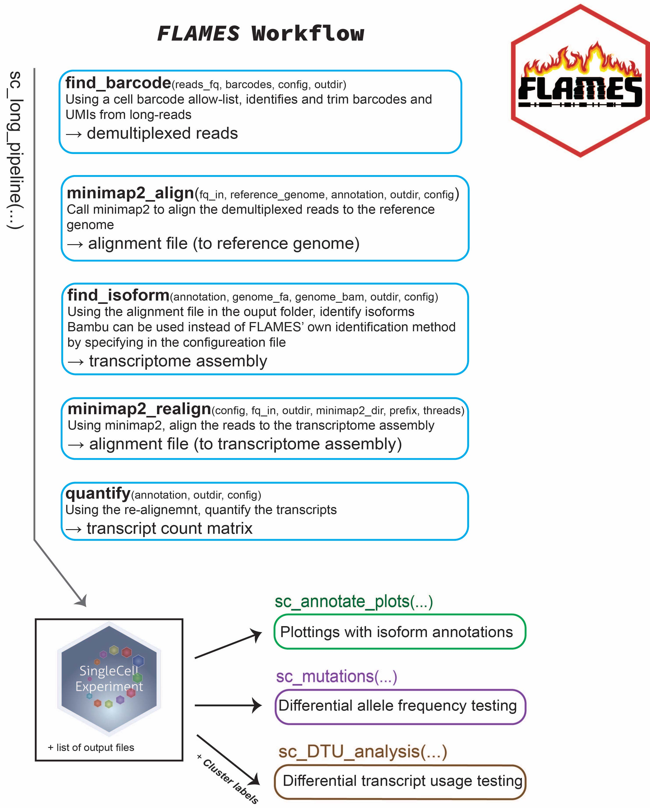
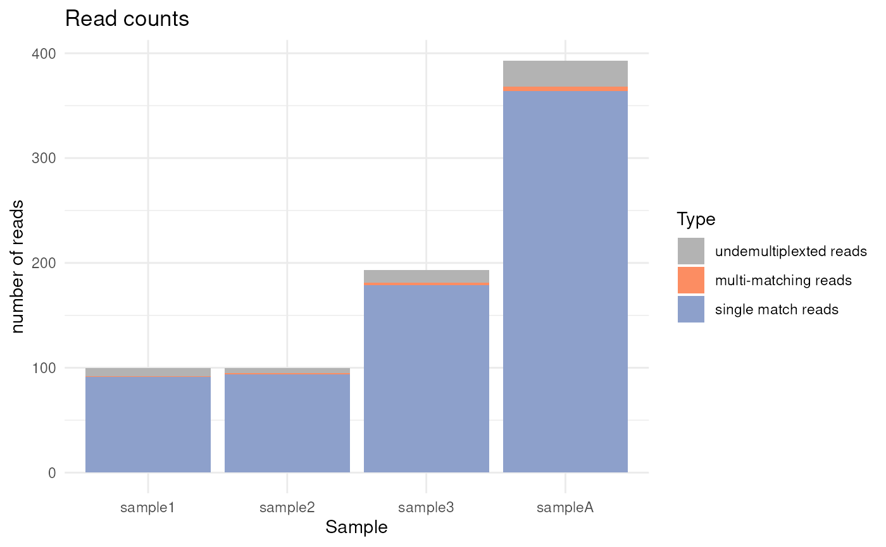
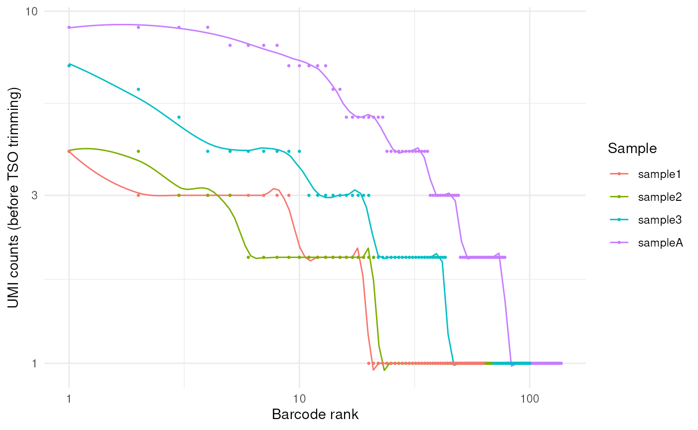
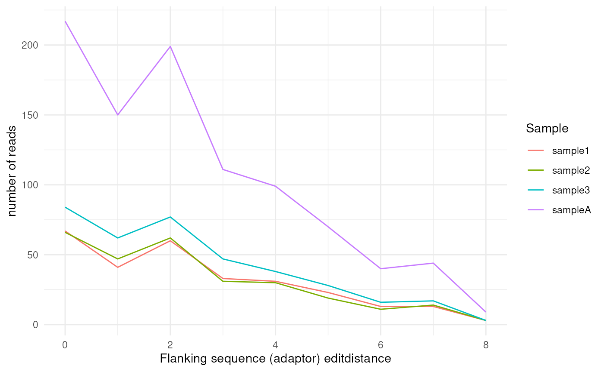
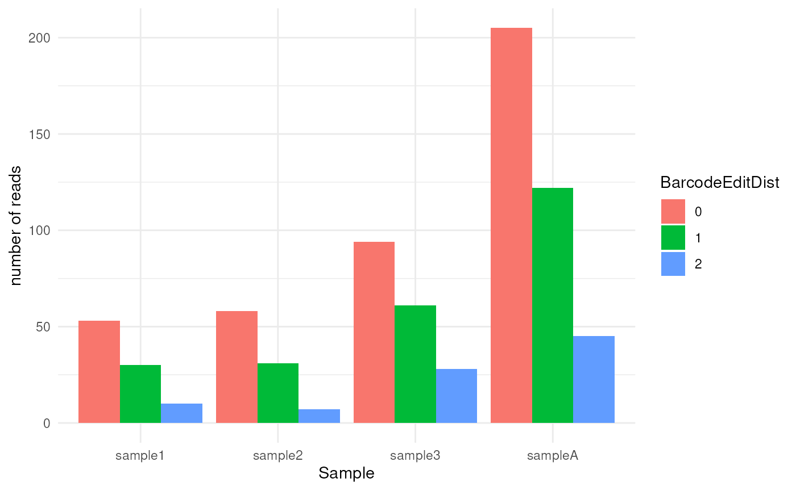
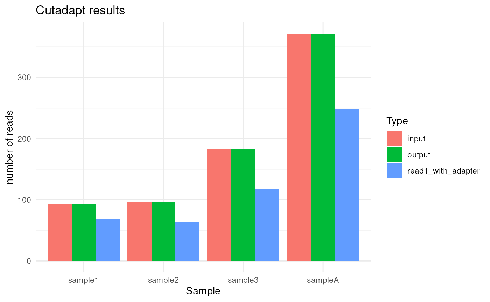

FLAMES 2.3.1
Changqing Wang, Oliver Voogd, Yupei You
Source:vignettes/FLAMES_vignette.Rmd
FLAMES_vignette.RmdFLAMES
The overhauled FLAMES 2.3.1 pipeline provides convenient pipelines for performing single-cell and bulk long-read analysis of mutations and isoforms. The pipeline is designed to take various type of experiments, e.g. with or without known cell barcodes and custome cell barcode designs, to reduce the need of constantly re-inventing the wheel for every new sequencing protocol.

Creating a pipeline
To start your long-read RNA-seq analysis, simply create a pipeline
via either BulkPipeline(),
SingleCellPipeline() or
MultiSampleSCPipeline(). Let’s try
SingleCellPipeline() first:
outdir <- tempfile()
dir.create(outdir)
# some example data
# known cell barcodes, e.g. from coupled short-read sequencing
bc_allow <- file.path(outdir, "bc_allow.tsv")
R.utils::gunzip(
filename = system.file("extdata", "bc_allow.tsv.gz", package = "FLAMES"),
destname = bc_allow, remove = FALSE
)
# reference genome
genome_fa <- file.path(outdir, "rps24.fa")
R.utils::gunzip(
filename = system.file("extdata", "rps24.fa.gz", package = "FLAMES"),
destname = genome_fa, remove = FALSE
)
pipeline <- SingleCellPipeline(
# use the default configs
config_file = create_config(
outdir,
pipeline_parameters.demultiplexer = "flexiplex"
),
outdir = outdir,
# the input fastq file
fastq = system.file("extdata", "fastq", "musc_rps24.fastq.gz", package = "FLAMES"),
# reference annotation file
annotation = system.file("extdata", "rps24.gtf.gz", package = "FLAMES"),
genome_fa = genome_fa,
barcodes_file = bc_allow
)
#> Writing configuration parameters to: /tmp/Rtmpqw6KQz/file8745567d6c5c/config_file_34629.json
#> Configured steps:
#> barcode_demultiplex: TRUE
#> genome_alignment: TRUE
#> gene_quantification: TRUE
#> isoform_identification: TRUE
#> read_realignment: TRUE
#> transcript_quantification: TRUE
#> samtools not found, will use Rsamtools package instead
pipeline
#> → A FLAMES.SingleCellPipeline outputting to /tmp/Rtmpqw6KQz/file8745567d6c5c
#>
#> ── Inputs
#> ✔ fastq: ...ibrary/FLAMES/extdata/fastq/musc_rps24.fastq.gz
#> ✔ annotation: /__w/_temp/Library/FLAMES/extdata/rps24.gtf.gz
#> ✔ genome_fa: /tmp/Rtmpqw6KQz/file8745567d6c5c/rps24.fa
#> ✔ barcodes_file: /tmp/Rtmpqw6KQz/file8745567d6c5c/bc_allow.tsv
#>
#> ── Outputs
#> ℹ demultiplexed_fastq: matched_reads.fastq.gz
#> ℹ deduped_fastq: matched_reads_dedup.fastq.gz
#> ℹ genome_bam: align2genome.bam
#> ℹ transcriptome_assembly: transcript_assembly.fa
#> ℹ transcriptome_bam: realign2transcript.bam
#>
#> ── Pipeline Steps
#> ℹ barcode_demultiplex (pending)
#> ℹ genome_alignment (pending)
#> ℹ gene_quantification (pending)
#> ℹ isoform_identification (pending)
#> ℹ read_realignment (pending)
#> ℹ transcript_quantification (pending)Running the pipeline
To execute the pipeline, simply call
run_FLAMES(pipeline). This will run through all the steps
in the pipeline, returning a updated pipeline object:
pipeline <- run_FLAMES(pipeline)
#> ── Running step: barcode_demultiplex @ Tue Aug 19 07:48:01 2025 ────────────────
#> Using flexiplex for barcode demultiplexing.
#> FLEXIPLEX 0.96.2
#> Setting max barcode edit distance to 2
#> Setting max flanking sequence edit distance to 8
#> Setting read IDs to be replaced
#> Setting number of threads to 8
#> Search pattern:
#> primer: CTACACGACGCTCTTCCGATCT
#> BC: NNNNNNNNNNNNNNNN
#> UMI: NNNNNNNNNNNN
#> polyT: TTTTTTTTT
#> Setting known barcodes from /tmp/Rtmpqw6KQz/file8745567d6c5c/bc_allow.tsv
#> Number of known barcodes: 143
#> Processing file: /__w/_temp/Library/FLAMES/extdata/fastq/musc_rps24.fastq.gz
#> Searching for barcodes...
#> Number of reads processed: 393
#> Number of reads where at least one barcode was found: 368
#> Number of reads with exactly one barcode match: 364
#> Number of chimera reads: 1
#> All done!
#> Reads Barcodes
#> 10 2
#> 9 2
#> 8 5
#> 7 4
#> 6 3
#> 5 7
#> 4 14
#> 3 14
#> 2 29
#> 1 57
#> ── Running step: genome_alignment @ Tue Aug 19 07:48:02 2025 ───────────────────
#> Creating junction bed file from GFF3 annotation.
#> Aligning sample /tmp/Rtmpqw6KQz/file8745567d6c5c/matched_reads.fastq.gz -> /tmp/Rtmpqw6KQz/file8745567d6c5c/align2genome.bam
#> Warning in minimap2_align(fq_in = fastqs[i], fa_file = genome, config =
#> pipeline@config, : samtools not found, using Rsamtools instead, this could be
#> slower and might fail for large BAM files.
#> Sorting BAM files by genome coordinates with 8 threads...
#> Indexing bam files
#> ── Running step: gene_quantification @ Tue Aug 19 07:48:03 2025 ────────────────
#> 07:48:03 AM Tue Aug 19 2025 quantify genes
#> Using BAM(s): /tmp/Rtmpqw6KQz/file8745567d6c5c/align2genome.bam
#> Assigning reads to genes...
#> Writing the gene count matrix ...
#> Plotting the saturation curve ...
#> Generating deduplicated fastq file ...
#> ── Running step: isoform_identification @ Tue Aug 19 07:48:03 2025 ─────────────
#> #### Read gene annotations
#> Removed similar transcripts in gene annotation: Counter()
#> #### find isoforms
#> chr14
#> ── Running step: read_realignment @ Tue Aug 19 07:48:04 2025 ───────────────────
#> Checking for fastq file(s) /__w/_temp/Library/FLAMES/extdata/fastq/musc_rps24.fastq.gz
#> files found
#> Checking for fastq file(s) /tmp/Rtmpqw6KQz/file8745567d6c5c/matched_reads.fastq.gz
#> files found
#> Checking for fastq file(s) /tmp/Rtmpqw6KQz/file8745567d6c5c/matched_reads_dedup.fastq.gz
#> files found
#> Realigning sample /tmp/Rtmpqw6KQz/file8745567d6c5c/matched_reads_dedup.fastq.gz -> /tmp/Rtmpqw6KQz/file8745567d6c5c/realign2transcript.bam
#> Warning in minimap2_align(fq_in = fastqs[i], fa_file =
#> pipeline@transcriptome_assembly, : samtools not found, using Rsamtools instead,
#> this could be slower and might fail for large BAM files.
#> Sorting BAM files by 8 with CB threads...
#> ── Running step: transcript_quantification @ Tue Aug 19 07:48:04 2025 ──────────
pipeline
#> ✔ A FLAMES.SingleCellPipeline outputting to /tmp/Rtmpqw6KQz/file8745567d6c5c
#>
#> ── Inputs
#> ✔ fastq: ...ibrary/FLAMES/extdata/fastq/musc_rps24.fastq.gz
#> ✔ annotation: /__w/_temp/Library/FLAMES/extdata/rps24.gtf.gz
#> ✔ genome_fa: /tmp/Rtmpqw6KQz/file8745567d6c5c/rps24.fa
#> ✔ barcodes_file: /tmp/Rtmpqw6KQz/file8745567d6c5c/bc_allow.tsv
#>
#> ── Outputs
#> ✔ demultiplexed_fastq: matched_reads.fastq.gz [217.0 KB]
#> ✔ deduped_fastq: matched_reads_dedup.fastq.gz [203.7 KB]
#> ✔ genome_bam: align2genome.bam [270.9 KB]
#> ✔ novel_isoform_annotation: isoform_annotated.gff3 [7.4 KB]
#> ✔ transcriptome_assembly: transcript_assembly.fa [8.4 KB]
#> ✔ transcriptome_bam: realign2transcript.bam [394.0 KB]
#>
#> ── Pipeline Steps
#> ✔ barcode_demultiplex (completed in 0.42 sec)
#> ✔ genome_alignment (completed in 0.35 sec)
#> ✔ gene_quantification (completed in 0.80 sec)
#> ✔ isoform_identification (completed in 0.47 sec)
#> ✔ read_realignment (completed in 0.26 sec)
#> ✔ transcript_quantification (completed in 0.54 sec)If you run into any error, run_FLAMES() will stop and
return the pipeline object with the error message. After resolving the
error, you can run resume_FLAMES(pipeline) to continue the
pipeline from the last step. There is also
run_step(pipeline, step_name) to run a specific step in the
pipeline. Let’s show this by deliberately causing an error via deleting
the input files:
# set up a new pipeline
outdir2 <- tempfile()
pipeline2 <- SingleCellPipeline(
config_file = create_config(
outdir,
pipeline_parameters.demultiplexer = "flexiplex"
),
outdir = outdir2,
fastq = system.file("extdata", "fastq", "musc_rps24.fastq.gz", package = "FLAMES"),
annotation = system.file("extdata", "rps24.gtf.gz", package = "FLAMES"),
genome_fa = genome_fa,
barcodes_file = bc_allow
)
#> Output directory does not exists: one is being created
#> [1] "/tmp/Rtmpqw6KQz/file874578407139"
#> Writing configuration parameters to: /tmp/Rtmpqw6KQz/file8745567d6c5c/config_file_34629.json
#> Configured steps:
#> barcode_demultiplex: TRUE
#> genome_alignment: TRUE
#> gene_quantification: TRUE
#> isoform_identification: TRUE
#> read_realignment: TRUE
#> transcript_quantification: TRUE
#> samtools not found, will use Rsamtools package instead
# delete the reference genome
unlink(genome_fa)
pipeline2 <- run_FLAMES(pipeline2)
#> ── Running step: barcode_demultiplex @ Tue Aug 19 07:48:05 2025 ────────────────
#> Using flexiplex for barcode demultiplexing.
#> FLEXIPLEX 0.96.2
#> Setting max barcode edit distance to 2
#> Setting max flanking sequence edit distance to 8
#> Setting read IDs to be replaced
#> Setting number of threads to 8
#> Search pattern:
#> primer: CTACACGACGCTCTTCCGATCT
#> BC: NNNNNNNNNNNNNNNN
#> UMI: NNNNNNNNNNNN
#> polyT: TTTTTTTTT
#> Setting known barcodes from /tmp/Rtmpqw6KQz/file8745567d6c5c/bc_allow.tsv
#> Number of known barcodes: 143
#> Processing file: /__w/_temp/Library/FLAMES/extdata/fastq/musc_rps24.fastq.gz
#> Searching for barcodes...
#> Number of reads processed: 393
#> Number of reads where at least one barcode was found: 368
#> Number of reads with exactly one barcode match: 364
#> Number of chimera reads: 1
#> All done!
#> Reads Barcodes
#> 10 2
#> 9 2
#> 8 5
#> 7 4
#> 6 3
#> 5 7
#> 4 14
#> 3 14
#> 2 29
#> 1 57
#> ── Running step: genome_alignment @ Tue Aug 19 07:48:05 2025 ───────────────────
#> Creating junction bed file from GFF3 annotation.
#> Aligning sample /tmp/Rtmpqw6KQz/file874578407139/matched_reads.fastq.gz -> /tmp/Rtmpqw6KQz/file874578407139/align2genome.bam
#> Warning in minimap2_align(fq_in = fastqs[i], fa_file = genome, config =
#> pipeline@config, : samtools not found, using Rsamtools instead, this could be
#> slower and might fail for large BAM files.
#> Warning in value[[3L]](cond): Error in step genome_alignment: argument is
#> missing, with no default, pipeline stopped.
pipeline2
#> ! A FLAMES.SingleCellPipeline outputting to /tmp/Rtmpqw6KQz/file874578407139
#>
#> ── Inputs
#> ✔ fastq: ...ibrary/FLAMES/extdata/fastq/musc_rps24.fastq.gz
#> ✔ annotation: /__w/_temp/Library/FLAMES/extdata/rps24.gtf.gz
#> ! genome_fa: /tmp/Rtmpqw6KQz/file8745567d6c5c/rps24.fa [missing]
#> ✔ barcodes_file: /tmp/Rtmpqw6KQz/file8745567d6c5c/bc_allow.tsv
#>
#> ── Outputs
#> ✔ demultiplexed_fastq: matched_reads.fastq.gz [217.0 KB]
#> ℹ deduped_fastq: matched_reads_dedup.fastq.gz
#> ℹ genome_bam: align2genome.bam
#> ℹ transcriptome_assembly: transcript_assembly.fa
#> ℹ transcriptome_bam: realign2transcript.bam
#>
#> ── Pipeline Steps
#> ✔ barcode_demultiplex (completed in 0.17 sec)
#> ✖ genome_alignment (failed: Error in .makeMessage(..., domain = domain): argument is missing, with no default
#> )
#> ℹ gene_quantification (pending)
#> ℹ isoform_identification (pending)
#> ℹ read_realignment (pending)
#> ℹ transcript_quantification (pending)Let’s then fix the error by re-creating the reference genome file and resume the pipeline:
R.utils::gunzip(
filename = system.file("extdata", "rps24.fa.gz", package = "FLAMES"),
destname = genome_fa, remove = FALSE
)
pipeline2 <- resume_FLAMES(pipeline2)
#> Resuming pipeline from step: genome_alignment
#> ── Running step: genome_alignment @ Tue Aug 19 07:48:05 2025 ───────────────────
#> Aligning sample /tmp/Rtmpqw6KQz/file874578407139/matched_reads.fastq.gz -> /tmp/Rtmpqw6KQz/file874578407139/align2genome.bam
#> Warning in minimap2_align(fq_in = fastqs[i], fa_file = genome, config =
#> pipeline@config, : samtools not found, using Rsamtools instead, this could be
#> slower and might fail for large BAM files.
#> Sorting BAM files by genome coordinates with 8 threads...
#> Indexing bam files
#> ── Running step: gene_quantification @ Tue Aug 19 07:48:06 2025 ────────────────
#> 07:48:06 AM Tue Aug 19 2025 quantify genes
#> Using BAM(s): /tmp/Rtmpqw6KQz/file874578407139/align2genome.bam
#> Assigning reads to genes...
#> Writing the gene count matrix ...
#> Plotting the saturation curve ...
#> Generating deduplicated fastq file ...
#> ── Running step: isoform_identification @ Tue Aug 19 07:48:06 2025 ─────────────
#> #### Read gene annotations
#> Removed similar transcripts in gene annotation: Counter()
#> #### find isoforms
#> chr14
#> ── Running step: read_realignment @ Tue Aug 19 07:48:06 2025 ───────────────────
#> Checking for fastq file(s) /__w/_temp/Library/FLAMES/extdata/fastq/musc_rps24.fastq.gz
#> files found
#> Checking for fastq file(s) /tmp/Rtmpqw6KQz/file874578407139/matched_reads.fastq.gz
#> files found
#> Checking for fastq file(s) /tmp/Rtmpqw6KQz/file874578407139/matched_reads_dedup.fastq.gz
#> files found
#> Realigning sample /tmp/Rtmpqw6KQz/file874578407139/matched_reads_dedup.fastq.gz -> /tmp/Rtmpqw6KQz/file874578407139/realign2transcript.bam
#> Warning in minimap2_align(fq_in = fastqs[i], fa_file =
#> pipeline@transcriptome_assembly, : samtools not found, using Rsamtools instead,
#> this could be slower and might fail for large BAM files.
#> Sorting BAM files by 8 with CB threads...
#> ── Running step: transcript_quantification @ Tue Aug 19 07:48:07 2025 ──────────
pipeline2
#> ✔ A FLAMES.SingleCellPipeline outputting to /tmp/Rtmpqw6KQz/file874578407139
#>
#> ── Inputs
#> ✔ fastq: ...ibrary/FLAMES/extdata/fastq/musc_rps24.fastq.gz
#> ✔ annotation: /__w/_temp/Library/FLAMES/extdata/rps24.gtf.gz
#> ✔ genome_fa: /tmp/Rtmpqw6KQz/file8745567d6c5c/rps24.fa
#> ✔ barcodes_file: /tmp/Rtmpqw6KQz/file8745567d6c5c/bc_allow.tsv
#>
#> ── Outputs
#> ✔ demultiplexed_fastq: matched_reads.fastq.gz [217.0 KB]
#> ✔ deduped_fastq: matched_reads_dedup.fastq.gz [203.7 KB]
#> ✔ genome_bam: align2genome.bam [270.9 KB]
#> ✔ novel_isoform_annotation: isoform_annotated.gff3 [7.4 KB]
#> ✔ transcriptome_assembly: transcript_assembly.fa [8.4 KB]
#> ✔ transcriptome_bam: realign2transcript.bam [394.0 KB]
#>
#> ── Pipeline Steps
#> ✔ barcode_demultiplex (completed in 0.17 sec)
#> ✔ genome_alignment (completed in 0.22 sec)
#> ✔ gene_quantification (completed in 0.32 sec)
#> ✔ isoform_identification (completed in 0.29 sec)
#> ✔ read_realignment (completed in 0.24 sec)
#> ✔ transcript_quantification (completed in 0.44 sec)After completing the pipeline, a SingleCellExperiment
object is created (or SummarizedExperiment for bulk
pipeline and list of SingleCellExperiment for multi-sample
pipeline). You can access the results via
experiment(pipeline):
experiment(pipeline)
#> class: SingleCellExperiment
#> dim: 10 137
#> metadata(0):
#> assays(1): counts
#> rownames(10): ENSMUSG00000025290.17_19_5159_1
#> ENSMUSG00000025290.17_19_5159_2 ... ENSMUST00000169826.2
#> ENSMUST00000225023.1
#> rowData names(6): transcript_id source ... rank gene_id
#> colnames(137): AACTCTTGTCACCTAA AACCATGAGTCGTTTG ... TGGTTCCAGGTGTGGT
#> TTTATGCAGACTAGAT
#> colData names(0):
#> reducedDimNames(0):
#> mainExpName: NULL
#> altExpNames(0):HPC support
Individual steps can be submitted as HPC jobs via crew
and crew.cluster packages, simply supply a list of crew
controllers (named by step name) to the controllers
argument of the pipeline constructors. For example, we could run the
alignment steps through controllers, while keeping the rest in the main
R session.
# example_pipeline provides an example pipeline for each of the three types
# of pipelines: BulkPipeline, SingleCellPipeline and MultiSampleSCPipeline
mspipeline <- example_pipeline("MultiSampleSCPipeline")
#> Writing configuration parameters to: /tmp/Rtmpqw6KQz/file87456386d341/config_file_34629.json
#> Configured steps:
#> barcode_demultiplex: TRUE
#> genome_alignment: TRUE
#> gene_quantification: TRUE
#> isoform_identification: TRUE
#> read_realignment: TRUE
#> transcript_quantification: TRUE
#> samtools not found, will use Rsamtools package instead
# Providing a single controller will run all steps in it:
controllers(mspipeline) <- crew::crew_controller_local()
# Setting controllers to an empty list will run all steps in the main R session:
controllers(mspipeline) <- list()
# Alternatively, we can run only the alignment steps in the crew controller:
controllers(mspipeline)[["genome_alignment"]] <- crew::crew_controller_local(workers = 4)
# Or `controllers(mspipeline) <- list(genome_alignment = crew::crew_cluster())`
# to remove controllers for all other steps.
# Replace `crew_controller_local()` with `crew.cluster::crew_controller_slurm()` or other
# crew controllers according to your HPC job scheduler.run_FLAMES() will then submit the alignment step to the
crew controller. By default, run_step() will ignore the
crew controllers and run the step in the main R session, since it is
easier to debug. You can use
run_step(pipeline, step_name, disable_controller = FALSE)
to prevent this behavior and run the step in crew controllers if
available.
You can tailor the resources for each step by specifying different arguments to the controllers. The alignment step typically benifits from more cores (e.g. 64 cores and 20GB memory), whereas other steps might not need as much cores but more memory hungry.
# An example helper function to create a Slurm controller with specific resources
create_slurm_controller <- function(
cpus, memory_gb, workers = 10, seconds_idle = 10,
script_lines = "module load R/flexiblas/4.5.0") {
name <- sprintf("slurm_%dc%dg", cpus, memory_gb)
crew.cluster::crew_controller_slurm(
name = name,
workers = workers,
seconds_idle = seconds_idle,
retry_tasks = FALSE,
options_cluster = crew.cluster::crew_options_slurm(
script_lines = script_lines,
memory_gigabytes_required = memory_gb,
cpus_per_task = cpus,
log_output = file.path("logs", "crew_log_%A.txt"),
log_error = file.path("logs", "crew_log_%A.txt")
)
)
}
controllers(mspipeline)[["genome_alignment"]] <-
create_slurm_controller(cpus = 64, memory_gb = 20)See also the crew.cluster
website for more information on the supported job schedulers.
Visualizations
QC plots
Quality metrics are collected throughout the pipeline, and FLAMES
provide visiualization functions to plot the metrics. For the first
demultiplexing step, we can use the plot_demultiplex
function to see how well many reads are retained after
demultiplexing:
# don't have to run the entire pipeline for this
# let's just run the demultiplexing step
mspipeline <- run_step(mspipeline, "barcode_demultiplex")
#> ── Running step: barcode_demultiplex @ Tue Aug 19 07:48:08 2025 ────────────────
#> Using flexiplex for barcode demultiplexing.
#> FLEXIPLEX 0.96.2
#> Setting max barcode edit distance to 2
#> Setting max flanking sequence edit distance to 8
#> Setting read IDs to be replaced
#> Setting number of threads to 1
#> Search pattern:
#> primer: CTACACGACGCTCTTCCGATCT
#> BC: NNNNNNNNNNNNNNNN
#> UMI: NNNNNNNNNNNN
#> polyT: TTTTTTTTT
#> Setting known barcodes from /tmp/Rtmpqw6KQz/file87456386d341/bc_allow.tsv
#> Number of known barcodes: 143
#> Processing file: /tmp/Rtmpqw6KQz/file87456386d341/fastq/sample1.fq.gz
#> Searching for barcodes...
#> Processing file: /tmp/Rtmpqw6KQz/file87456386d341/fastq/sample2.fq.gz
#> Searching for barcodes...
#> Processing file: /tmp/Rtmpqw6KQz/file87456386d341/fastq/sample3.fq.gz
#> Searching for barcodes...
#> Number of reads processed: 393
#> Number of reads where at least one barcode was found: 368
#> Number of reads with exactly one barcode match: 364
#> Number of chimera reads: 1
#> All done!
#> Reads Barcodes
#> 10 2
#> 9 2
#> 8 5
#> 7 4
#> 6 3
#> 5 7
#> 4 14
#> 3 14
#> 2 29
#> 1 57
#> FLEXIPLEX 0.96.2
#> Setting max barcode edit distance to 2
#> Setting max flanking sequence edit distance to 8
#> Setting read IDs to be replaced
#> Setting number of threads to 1
#> Search pattern:
#> primer: CTACACGACGCTCTTCCGATCT
#> BC: NNNNNNNNNNNNNNNN
#> UMI: NNNNNNNNNNNN
#> polyT: TTTTTTTTT
#> Setting known barcodes from /tmp/Rtmpqw6KQz/file87456386d341/bc_allow.tsv
#> Number of known barcodes: 143
#> Processing file: /tmp/Rtmpqw6KQz/file87456386d341/fastq/sample1.fq.gz
#> Searching for barcodes...
#> Number of reads processed: 100
#> Number of reads where at least one barcode was found: 92
#> Number of reads with exactly one barcode match: 91
#> Number of chimera reads: 1
#> All done!
#> Reads Barcodes
#> 4 1
#> 3 9
#> 2 9
#> 1 44
#> FLEXIPLEX 0.96.2
#> Setting max barcode edit distance to 2
#> Setting max flanking sequence edit distance to 8
#> Setting read IDs to be replaced
#> Setting number of threads to 1
#> Search pattern:
#> primer: CTACACGACGCTCTTCCGATCT
#> BC: NNNNNNNNNNNNNNNN
#> UMI: NNNNNNNNNNNN
#> polyT: TTTTTTTTT
#> Setting known barcodes from /tmp/Rtmpqw6KQz/file87456386d341/bc_allow.tsv
#> Number of known barcodes: 143
#> Processing file: /tmp/Rtmpqw6KQz/file87456386d341/fastq/sample2.fq.gz
#> Searching for barcodes...
#> Number of reads processed: 100
#> Number of reads where at least one barcode was found: 95
#> Number of reads with exactly one barcode match: 94
#> Number of chimera reads: 0
#> All done!
#> Reads Barcodes
#> 4 2
#> 3 3
#> 2 16
#> 1 47
#> FLEXIPLEX 0.96.2
#> Setting max barcode edit distance to 2
#> Setting max flanking sequence edit distance to 8
#> Setting read IDs to be replaced
#> Setting number of threads to 1
#> Search pattern:
#> primer: CTACACGACGCTCTTCCGATCT
#> BC: NNNNNNNNNNNNNNNN
#> UMI: NNNNNNNNNNNN
#> polyT: TTTTTTTTT
#> Setting known barcodes from /tmp/Rtmpqw6KQz/file87456386d341/bc_allow.tsv
#> Number of known barcodes: 143
#> Processing file: /tmp/Rtmpqw6KQz/file87456386d341/fastq/sample3.fq.gz
#> Searching for barcodes...
#> Number of reads processed: 193
#> Number of reads where at least one barcode was found: 181
#> Number of reads with exactly one barcode match: 179
#> Number of chimera reads: 0
#> All done!
#> Reads Barcodes
#> 7 1
#> 6 1
#> 5 1
#> 4 7
#> 3 10
#> 2 27
#> 1 53
plot_demultiplex(mspipeline)
#> $reads_count_plot
#>
#> $knee_plot
#> `geom_smooth()` using formula = 'y ~ x'
#>
#> $flank_editdistance_plot
#>
#> $barcode_editdistance_plot
#>
#> $cutadapt_plot
Session Info
#> R version 4.5.1 (2025-06-13)
#> Platform: x86_64-pc-linux-gnu
#> Running under: Ubuntu 24.04.2 LTS
#>
#> Matrix products: default
#> BLAS: /usr/lib/x86_64-linux-gnu/openblas-pthread/libblas.so.3
#> LAPACK: /usr/lib/x86_64-linux-gnu/openblas-pthread/libopenblasp-r0.3.26.so; LAPACK version 3.12.0
#>
#> locale:
#> [1] LC_CTYPE=en_US.UTF-8 LC_NUMERIC=C
#> [3] LC_TIME=en_US.UTF-8 LC_COLLATE=en_US.UTF-8
#> [5] LC_MONETARY=en_US.UTF-8 LC_MESSAGES=en_US.UTF-8
#> [7] LC_PAPER=en_US.UTF-8 LC_NAME=C
#> [9] LC_ADDRESS=C LC_TELEPHONE=C
#> [11] LC_MEASUREMENT=en_US.UTF-8 LC_IDENTIFICATION=C
#>
#> time zone: UTC
#> tzcode source: system (glibc)
#>
#> attached base packages:
#> [1] stats graphics grDevices utils datasets methods base
#>
#> other attached packages:
#> [1] FLAMES_2.3.5 BiocStyle_2.37.1
#>
#> loaded via a namespace (and not attached):
#> [1] splines_4.5.1 later_1.4.2
#> [3] BiocIO_1.19.0 bitops_1.0-9
#> [5] filelock_1.0.3 tibble_3.3.0
#> [7] R.oo_1.27.1 polyclip_1.10-7
#> [9] bambu_3.11.2 XML_3.99-0.18
#> [11] lifecycle_1.0.4 pwalign_1.5.0
#> [13] edgeR_4.7.3 doParallel_1.0.17
#> [15] vroom_1.6.5 processx_3.8.6
#> [17] lattice_0.22-7 MASS_7.3-65
#> [19] magrittr_2.0.3 limma_3.65.3
#> [21] sass_0.4.10 rmarkdown_2.29
#> [23] jquerylib_0.1.4 yaml_2.3.10
#> [25] metapod_1.17.0 reticulate_1.43.0
#> [27] cowplot_1.2.0 DBI_1.2.3
#> [29] RColorBrewer_1.1-3 abind_1.4-8
#> [31] ShortRead_1.67.1 GenomicRanges_1.61.1
#> [33] purrr_1.1.0 R.utils_2.13.0
#> [35] BiocGenerics_0.55.1 RCurl_1.98-1.17
#> [37] yulab.utils_0.2.0 tweenr_2.0.3
#> [39] circlize_0.4.16 IRanges_2.43.0
#> [41] S4Vectors_0.47.0 ggrepel_0.9.6
#> [43] irlba_2.3.5.1 dqrng_0.4.1
#> [45] pkgdown_2.1.3.9000 codetools_0.2-20
#> [47] DelayedArray_0.35.2 scuttle_1.19.0
#> [49] ggforce_0.5.0 tidyselect_1.2.1
#> [51] shape_1.4.6.1 UCSC.utils_1.5.0
#> [53] farver_2.1.2 ScaledMatrix_1.17.0
#> [55] viridis_0.6.5 matrixStats_1.5.0
#> [57] stats4_4.5.1 Seqinfo_0.99.2
#> [59] GenomicAlignments_1.45.2 jsonlite_2.0.0
#> [61] GetoptLong_1.0.5 BiocNeighbors_2.3.1
#> [63] scater_1.37.0 iterators_1.0.14
#> [65] systemfonts_1.2.3 foreach_1.5.2
#> [67] tools_4.5.1 ragg_1.4.0
#> [69] Rcpp_1.1.0 glue_1.8.0
#> [71] gridExtra_2.3 SparseArray_1.9.1
#> [73] mgcv_1.9-3 xfun_0.52
#> [75] MatrixGenerics_1.21.0 GenomeInfoDb_1.45.9
#> [77] dplyr_1.1.4 withr_3.0.2
#> [79] BiocManager_1.30.26 fastmap_1.2.0
#> [81] basilisk_1.21.5 latticeExtra_0.6-30
#> [83] bluster_1.19.0 digest_0.6.37
#> [85] rsvd_1.0.5 R6_2.6.1
#> [87] textshaping_1.0.1 colorspace_2.1-1
#> [89] jpeg_0.1-11 dichromat_2.0-0.1
#> [91] RSQLite_2.4.2 R.methodsS3_1.8.2
#> [93] tidyr_1.3.1 generics_0.1.4
#> [95] data.table_1.17.8 rtracklayer_1.69.1
#> [97] httr_1.4.7 htmlwidgets_1.6.4
#> [99] S4Arrays_1.9.1 scatterpie_0.2.5
#> [101] pkgconfig_2.0.3 gtable_0.3.6
#> [103] blob_1.2.4 ComplexHeatmap_2.25.2
#> [105] hwriter_1.3.2.1 SingleCellExperiment_1.31.1
#> [107] XVector_0.49.0 htmltools_0.5.8.1
#> [109] bookdown_0.43 clue_0.3-66
#> [111] scales_1.4.0 Biobase_2.69.0
#> [113] png_0.1-8 nanonext_1.6.2
#> [115] SpatialExperiment_1.19.1 scran_1.37.0
#> [117] ggfun_0.2.0 knitr_1.50
#> [119] tzdb_0.5.0 rjson_0.2.23
#> [121] nlme_3.1-168 curl_6.4.0
#> [123] crew_1.2.1 cachem_1.1.0
#> [125] GlobalOptions_0.1.2 stringr_1.5.1
#> [127] parallel_4.5.1 vipor_0.4.7
#> [129] AnnotationDbi_1.71.1 restfulr_0.0.16
#> [131] desc_1.4.3 pillar_1.11.0
#> [133] grid_4.5.1 vctrs_0.6.5
#> [135] promises_1.3.3 BiocSingular_1.25.0
#> [137] beachmat_2.25.4 cluster_2.1.8.1
#> [139] beeswarm_0.4.0 evaluate_1.0.4
#> [141] readr_2.1.5 GenomicFeatures_1.61.6
#> [143] magick_2.8.7 locfit_1.5-9.12
#> [145] cli_3.6.5 compiler_4.5.1
#> [147] Rsamtools_2.25.2 rlang_1.1.6
#> [149] crayon_1.5.3 labeling_0.4.3
#> [151] interp_1.1-6 ps_1.9.1
#> [153] fs_1.6.6 ggbeeswarm_0.7.2
#> [155] stringi_1.8.7 viridisLite_0.4.2
#> [157] deldir_2.0-4 BiocParallel_1.43.4
#> [159] Biostrings_2.77.2 Matrix_1.7-3
#> [161] dir.expiry_1.17.0 BSgenome_1.77.1
#> [163] hms_1.1.3 bit64_4.6.0-1
#> [165] ggplot2_3.5.2 statmod_1.5.0
#> [167] KEGGREST_1.49.1 SummarizedExperiment_1.39.1
#> [169] mirai_2.4.1 igraph_2.1.4
#> [171] memoise_2.0.1 bslib_0.9.0
#> [173] bit_4.6.0 xgboost_1.7.11.1